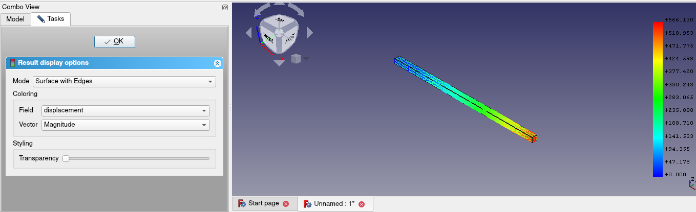

This week started with me implementing the z88 testing framework. But there was a catch here. Z88 has a number of input files and all are significant. One has the mesh, the other has solver properties, etc. Now why is this important? Because calculix has only one input file called mesh.inp which has everything the solver needs. And while elmer does have a number of input files, only the case.sif file is important for testing. So in the testing framework, we can simply compare these respective files but that can’t be done with z88. All the files need to be compared. And how do you do a task repeatitively in programming? Loop of course. So I looped over the given input files and compared them with the generated input files as a test. Though this would mean that unlike the calculix or elmer test where the given input file is saved with the name of the example, in case of z88, the directory having the given input files needs to have the name of the example while the files in it need to have their standard names.
Also, for initial testing I was told to use the “box static analysis” example but later we realised that z88 can’t solve this example. Why? Cause z88 can only handle the fixed and force constraints but this example has pressure constraint. Ah but strangely, the test for this example using z88 did passed. How? Cause it’s a bug in z88’s writer module of FEM workbench that it won’t give warning for unsupported constraints. I have decided to solve this bug after GSoC. So anyway, we used the standard cantilever faceload example for the basic testing. Later on, I added tests for all the examples that z88 can solve which are only a few currently.
And to further decrease that few number of examples solvable with z88, we found that the edge_load_calculation example (though having only the fixed and force constraints) is not solvable by z88. Why? The input file writing operation is never finished!! Strange right. That’s a bug we need to fix.
One last bug in z88 that we discovered was it was giving zero displacement for the cantilever faceload example. Well it was calculating the displacements but we can say that it wasn’t showing them, hence the zero displacement results. Bernd quickly fixed it though.
So the first issue with the example GUI was that no matter how you open examples, they would open with the ccxtools (calculix) solver. Even if you go to the ‘Solver’ submenu and open an elmer example, it would have ccxtools solver. This isn’t the expected behaviour. So I added some checks for seeing if the user is selecting examples from the “Solver” submenu. This was done in this commit. Being python, it should be easy to understand the changes which helped me implement this feature.
Another improvement was to change the “cancel” button to “close” button. Now “cancel” is a standard button in Qt so its very easy to add it. But for “close”, I had to add a new button, add it’s icon and add a reject signal to it (Yeah Qt works using signals and recievers).
I got another example to work on in this week. As always, it was a simple example. No really, it was. A 33m long beam (cantilever) of steel getting deformed under it’s own weight. Quite a real world example, right. This is how the result should look:

At first, since it’s a cantilever example, I built it as a derivative of the cantilever faceload. But then Bernd advised me to build it as a separate example cause it’s a 33m long cantilever, unlike the other cantilever examples. Initially the results with Elmer were wrong. But we created a separated thread and it was finally found that changing the Linear Solver Type from Iterative to Direct gave correct results. Raback, one of the developer of Elmer, told us that this might be because the iterative method may not be able to converge so it’s better to use the direct method for simple examples like this one.
And out of nowhere is a time travel comic: